Names: Xay Hanmonty
Link to webpage: cal-cs184-student/hw-webpages-xay-writeup
Link to GitHub repository: cal-cs184-student/sp25-hw1-x

In this walkthrough, I'll explain how to rasterize a triangle efficiently. The goal is to determine which pixels should be filled while keeping the computation minimal.
First, I find the smallest and largest x and y coordinates of the triangle vertices. This helps define a rectangular bounding box that fully contains the triangle.
floor() to get the minimum x and y values.ceil() to get the maximum x and y values.Next, I compute the edge vectors for the triangle:
(v1 - v0), (v2 - v1), and (v0 - v2).Now, I test each pixel within the bounding box to see if it's inside the triangle.
(x + 0.5, y + 0.5).l = (px - x0) * edge01_x - (py - y0) * edge01_y;To make this algorithm as efficient as possible:
To further optimize, I use incremental updates instead of recalculating values from scratch:
// Instead of computing l0 for each pixel:
l0 = (px - x0) * edge01_x - (py - y0) * edge01_y;
// I update incrementally:
l0 += l0_dx; // Move horizontally
l0 += l0_dy; // Move vertically
By precomputing how much the edge function changes per step, I avoid unnecessary calculations inside the inner loop:
// Precompute how much l changes per pixel step
float l0_dx = edge01_y;
float l1_dx = edge02_y;
float l2_dx = edge12_y;
Instead of updating every pixel individually, I process rows at a time:
// Store initial row value
float l0_row = initial_value;
// Update once per row instead of per pixel
l0_row += l0_dy;
I optimized the code by removing redundant calculations of pixel centers, reducing floating-point operations inside loops, and using simple additions instead of multiplications wherever possible.
|
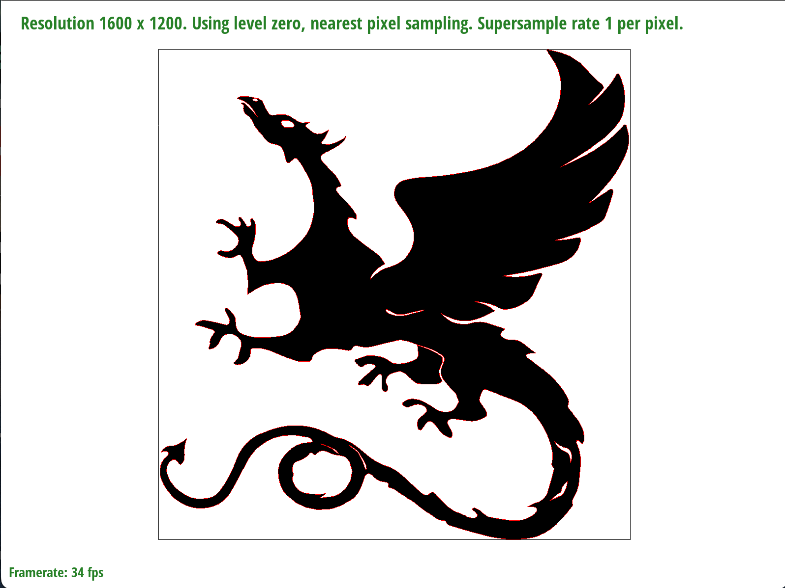
|
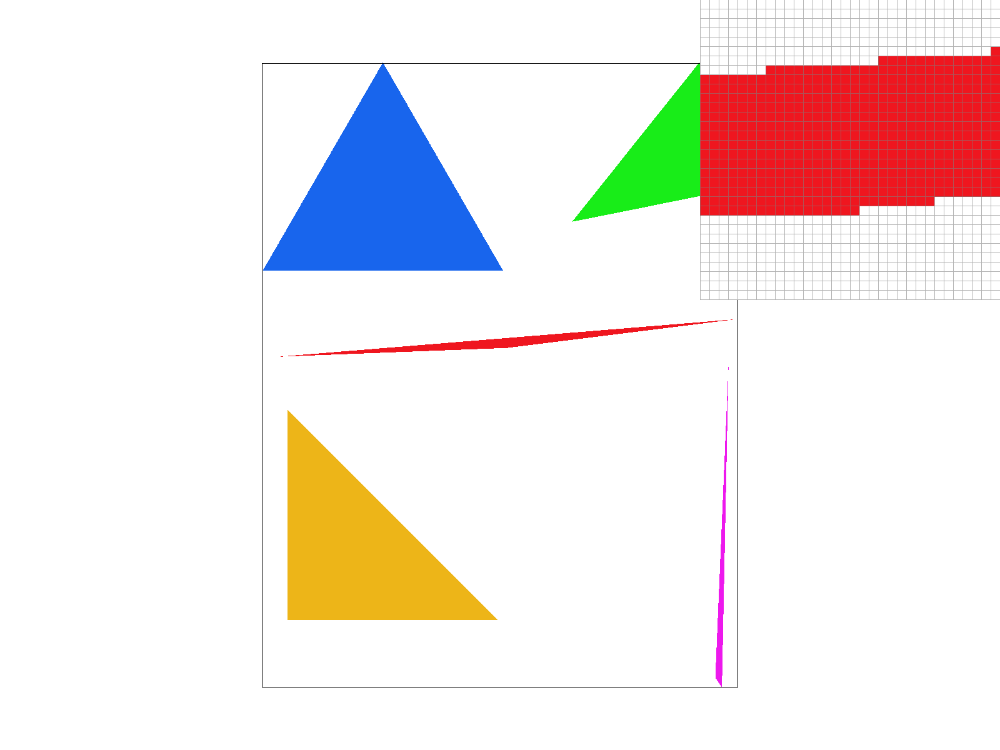
|

|
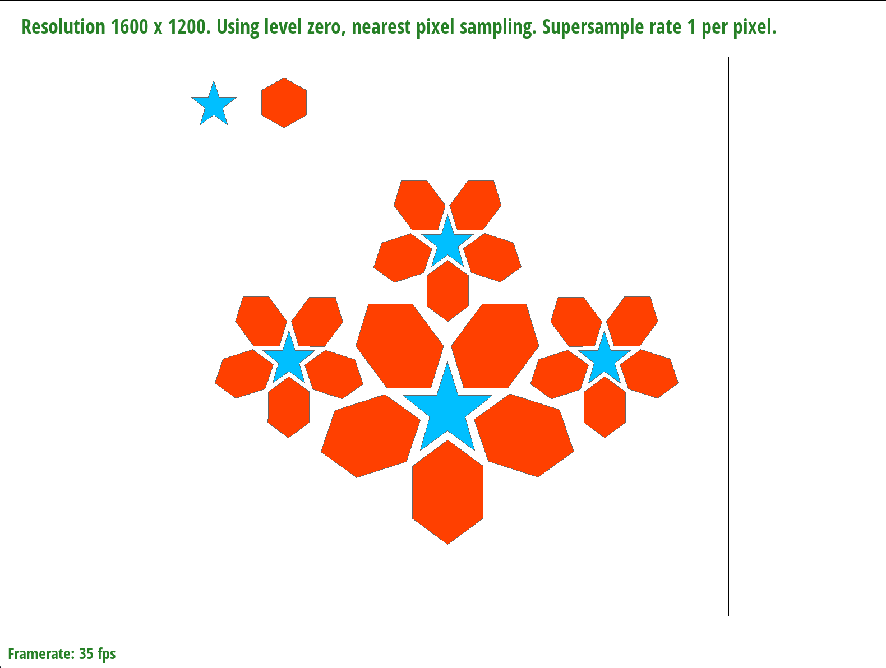
|
This implementation lies in three main components which is modified rasterization pipeline, rasterization buffer management, and color resolution. In sample buffer management, instead of storing a single color sample per pixel, I store sample_rate samples per pixel. The sample_buffer is sized at width × height × sample_rate, allowing for finer granularity. For a sample rate of 4, each pixel is divided into a 2×2 grid of subpixels, while for a sample rate of 16, each pixel becomes a 4×4 grid. To accommodate this, I modify the rasterization pipeline by scaling coordinates in rasterize_triangle by squaring the sample_rate, ensuring that the bounding box and edge equations work in this higher-resolution space. Each subpixel is tested independently against the triangle’s edges, and if it falls inside, its color is stored in the sample buffer. Once rasterization is complete, I use the resolve_to_framebuffer function to average the subsamples, determining the final pixel color. For each pixel, I gather all subsamples and compute their average, resulting in a smoother final output. This supersampling technique significantly reduces aliasing artifacts by capturing geometric detail at a resolution higher than the final display. For example, when a triangle edge cuts through a pixel, at sample_rate=1, the pixel is either fully inside or outside the triangle. At sample_rate=4, I can see 1, 2, 3, or 4 subpixels covered, while at sample_rate=16, there are up to 16 possible coverage values, leading to much smoother edges and improved anti-aliasing.

|
|
|
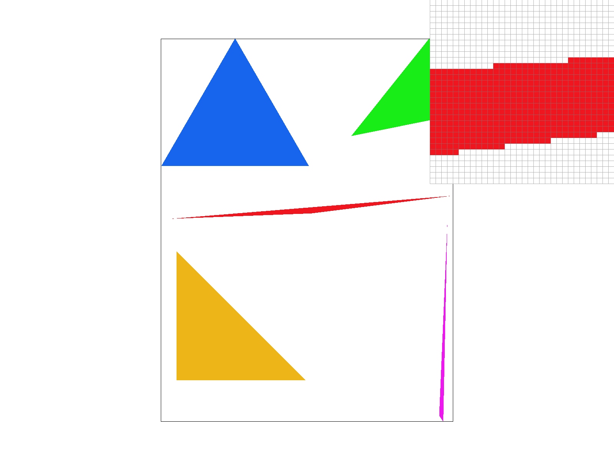
|
|
|
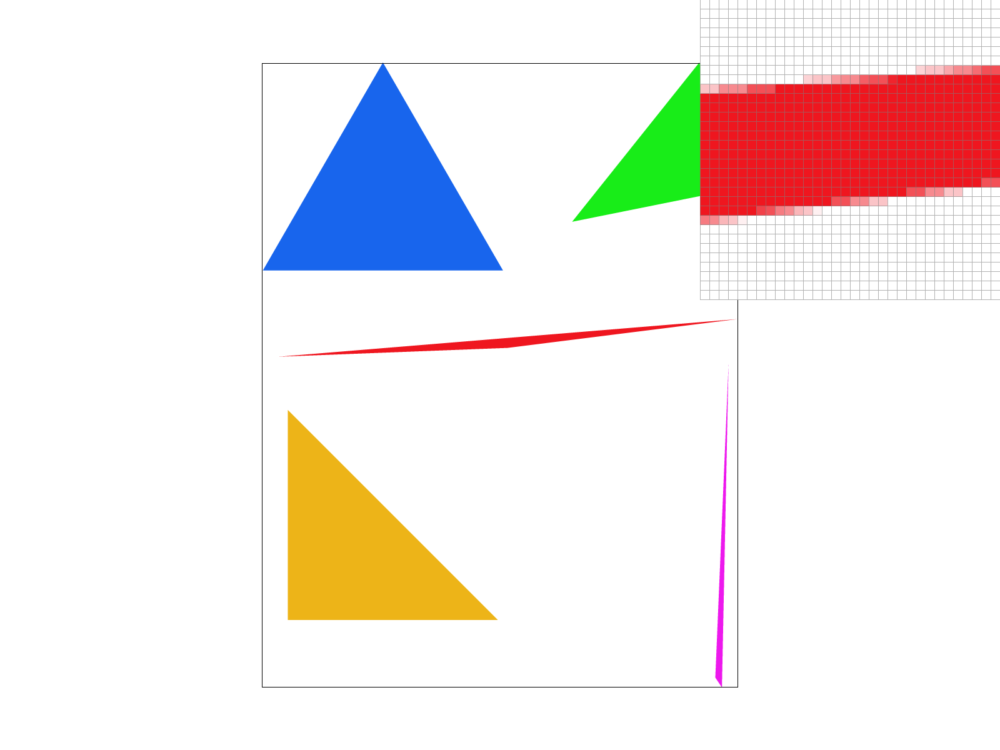
|

|
Added a new rotate_view(float degrees) function that gets the current view transformation matrix and creates a rotation matrix for the specified angle then applies the rotation to the current transformation matrix. Modified the keyboard event handler to respond to 'Q' and 'E' keys:
|
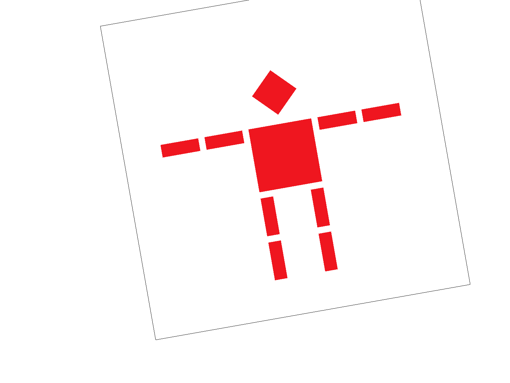
|
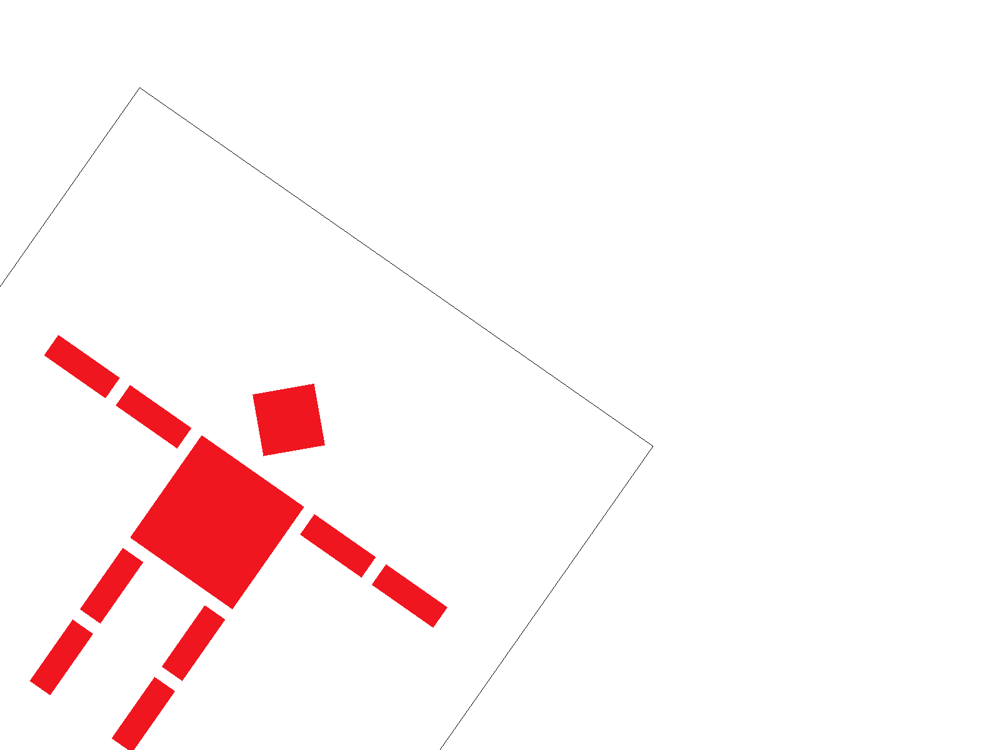
|
|
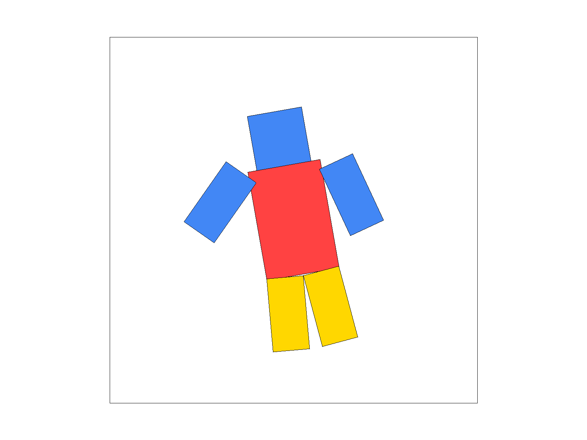
|
Added a 10-degree forward lean to the entire robot to give it a more energetic pose. The legs are slightly angled (-5 and +5 degrees) in opposite directions and I also used bright, friendly colors. Additionally, the left arm is rotated 45 degrees upward in a classic waving gesture
Barycentric coordinates are a way to express the position of a point inside a triangle using a weighted combination of the triangle’s three vertices. Given a triangle with vertices A, B, and C, any point P inside the triangle can be represented as a weighted sum of these vertices:
where α, β, γ are the barycentric coordinates. These weights determine how much influence each vertex has on the position of P.
In our code, we calculate these weights using areas:
float w0 = (x1 - px) * (y2 - py) - (x2 - px) * (y1 - py); // Area of P12
float w1 = (x2 - px) * (y0 - py) - (x0 - px) * (y2 - py); // Area of P20
float w2 = (x0 - px) * (y1 - py) - (x1 - px) * (y0 - py); // Area of P01Each barycentric weight is proportional to the area of the sub-triangle formed by the point and the opposite edge of the main triangle. This concept is demonstrated in the color wheel images, where different colors emerge based on the distribution of these weights. Pure Red appears where w₀ = 1 (while the other weights are 0), Pure Green where w₁ = 1, and Pure Blue where w₂ = 1.
|
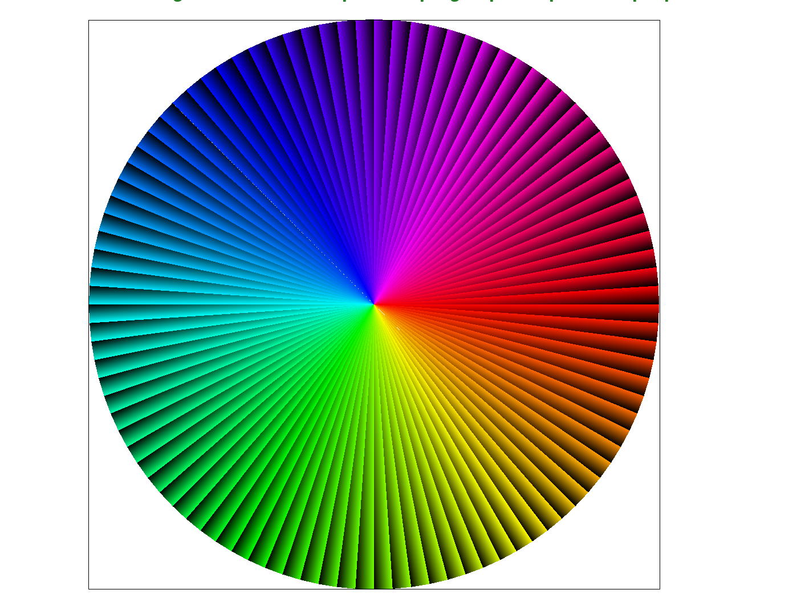
|
|
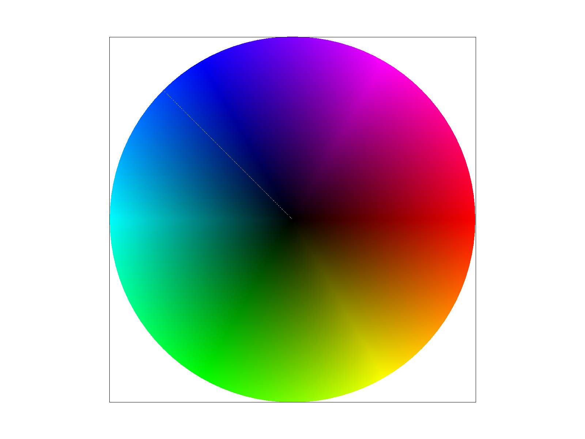
|
The color wheels are actually made up of many triangles, and within each triangle, barycentric coordinates are used to smoothly interpolate between the colors at its vertices. This creates the continuous rainbow effect we see, where each point's color is a weighted average of its triangle's vertex colors based on its barycentric coordinates.
The difference between the two images shows the impact of the number of triangles used - Image 2 uses more triangles for a smoother appearance, while Image 1 shows more distinct triangular segments. This demonstrates how barycentric interpolation works within each individual triangle to create smooth color transitions.
Pixel sampling is the process of determining what color to assign to a pixel when mapping a texture onto a surface. So, when we're rendering a textured triangle,each pixel needs to Sample the texture at a specific UV coordinates to determine its color.
First of all, I calculate the texture sample using barycentric coordinates and then use one of the two sampling methods to get the color.
float u = u0 * w0 + u1 * w1 + u2 * w2;
float v = v0 * w0 + v1 * w1 + v2 * w2;
// Sample the texture
if (psm == P_NEAREST) {
color = tex.sample_nearest(Vector2D(u, v), 0);
} else { // P_LINEAR
color = tex.sample_bilinear(Vector2D(u, v), 0);
}
Here are the differences that I found between nearest and linear sampling:
|
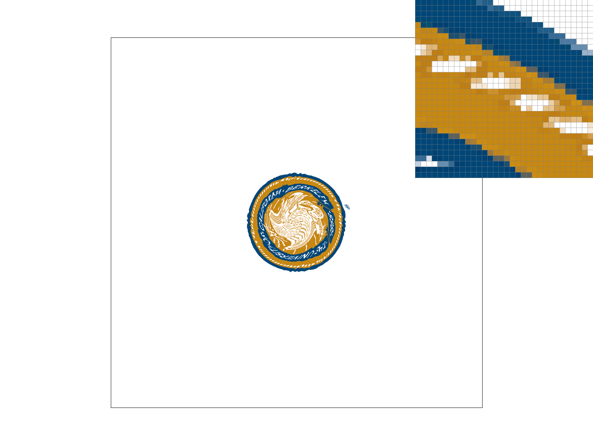
|
|
|
|
|
|
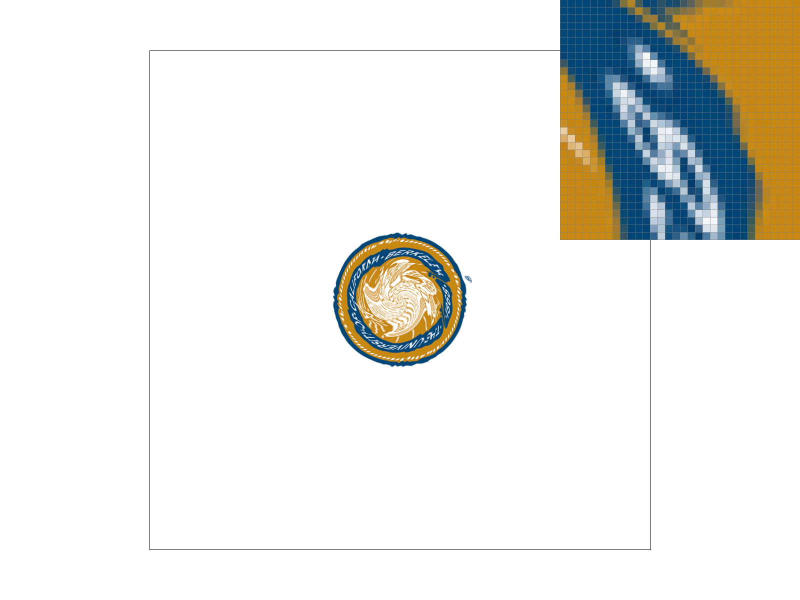
|
Thus, when deciding which sampling method to use for texture mapping, it is usually necessary to consider the following factors:
Level Sampling is a technique used to reduce aliasing artifacts in texture mapping by utilizing pre-computed, downsampled versions of the texture, known as mipmaps. This helps achieve smoother rendering at different viewing distances.
We use get_level to determine the appropriate mipmap level, the algorithm calculates how quickly texture coordinates change between adjacent pixels using derivatives
(du/dx, dv/dx) and (du/dy, dv/dy). These changes are then scaled by the texture dimensions to obtain actual pixel-space rates of change.
The level is computed as:
L = max(√(du/dx² + dv/dx²), √(du/dy² + dv/dy²))
The appropriate mipmap level is selected using log₂(L).
Different methods are used to select texture levels:
|
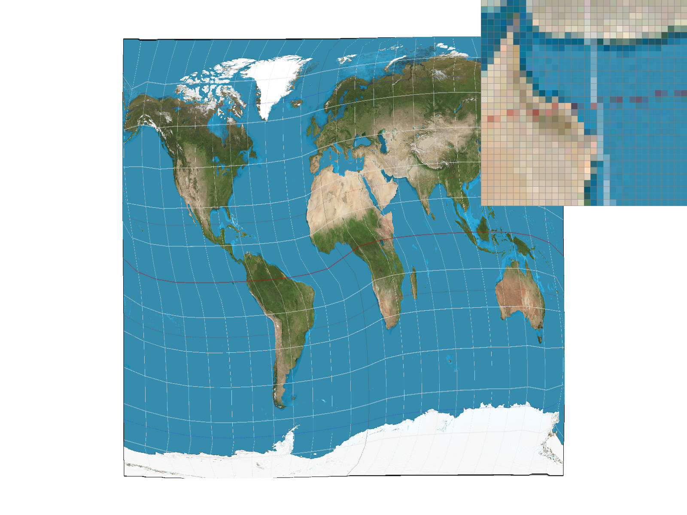
|
|
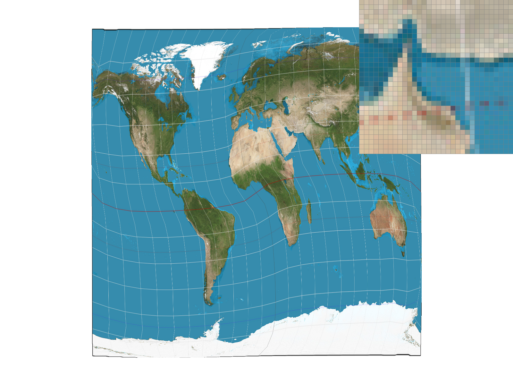
|
|
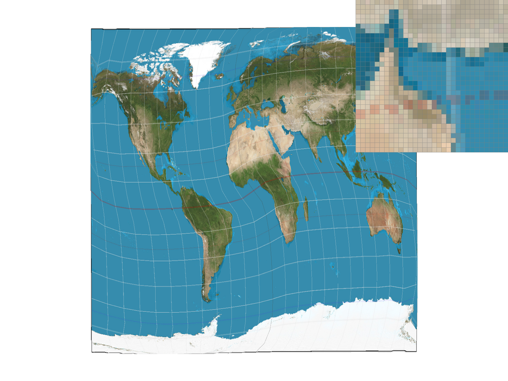
|
|
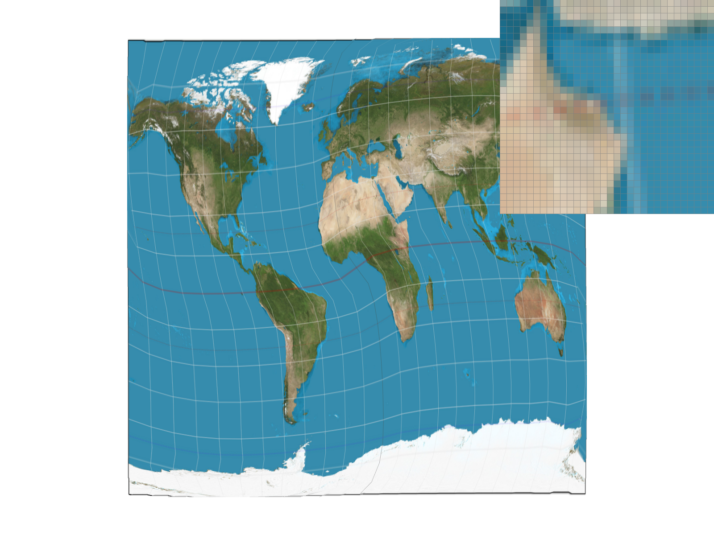
|